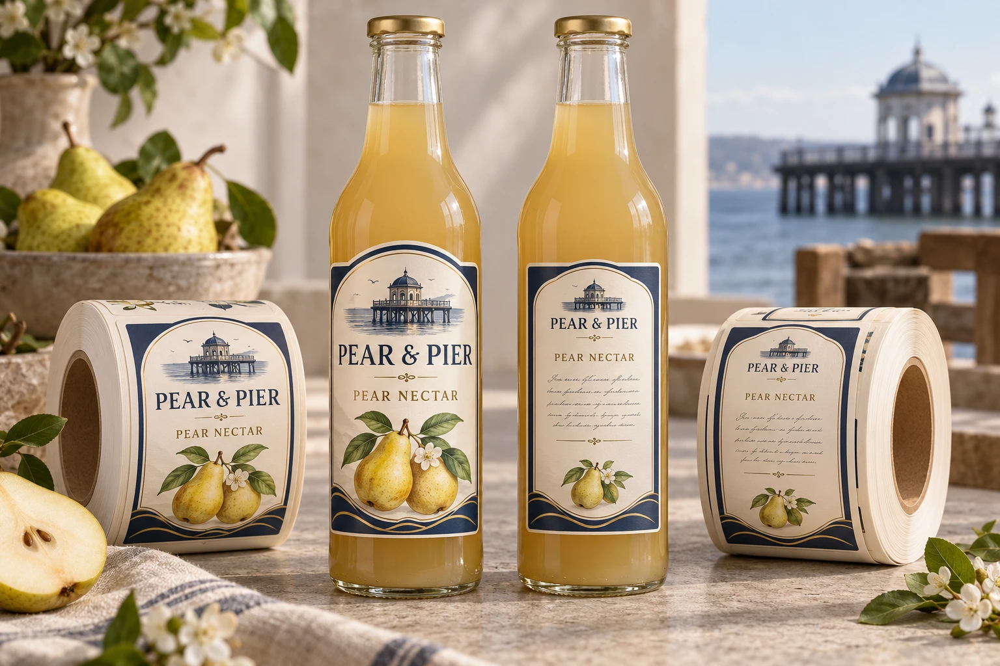
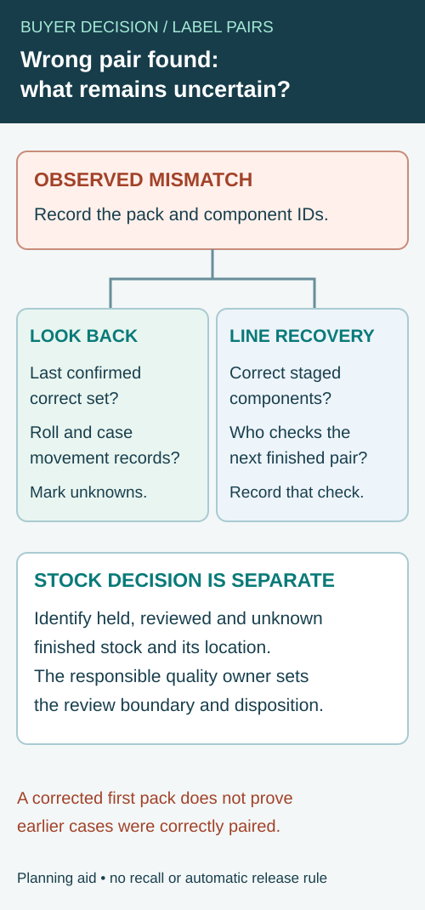

A front label and a back label may each match an approved PDF while belonging to different product versions. The finished bottle then has a combination nobody intended. Separate labels create a pairing decision as well as an appearance decision.
Release a named set of component revisions for each product, then reconcile stock by that set. Use this alongside the front/back-versus-wrap format comparison rather than treating two correct loose labels as a correct finished pack.

AI-generated packaging planning example. Pear & Pier is a fictional brand; not a customer project, production test or usable retail artwork.
Give the label set a reference
Identify the product/SKU, intended market or version and the component revisions that belong together. A shared front design may serve several products, but the approved combinations must be explicit. Similar colors and matching label sizes cannot establish the correct pair.
| Set record | Required link |
|---|---|
| Product identity | SKU, package and authorized version |
| Front component | File revision, size and construction reference |
| Back component | File revision, product information and intended pairing |
| Other components | Any neck, lid, strip or secondary identification label |
| Packing evidence | First finished pack showing every component together |
| Remaining stock | Usable quantity of each component and any unmatched revision |
Use a set reference on the packing instruction and supporting inventory record. This is an editorial control aid, not a requirement that every physical label carries an extra printed code. Ask the packer how it identifies rolls and clears the previous product.
Inspect one complete pack before the run continues
The first-off review should present all label components on the intended product, not only the attractive front face. Compare that pack with the approved set record. The brand's authorized content owner remains responsible for the actual product wording and market-specific placement.
If two front artworks share one back label, document that relationship. If the same front design accompanies several back versions, give the packer a reliable distinguishing reference. Do not depend on an operator remembering a small flavor-color difference during a changeover.
Plan what happens when one component changes
A back-copy correction may leave the front component physically unchanged, but the authorized set must be revised. Identify whether any old back stock may still be used and under which product/version authorization. The label supplier should not decide that from a matching front design.
Where one component runs short, do not substitute another version to consume spare stock. Reconcile complete packs that can be made from confirmed usable quantities. Record unmatched remaining components separately so the next order does not simply duplicate the original ratio.
For multi-SKU demand allocation, use the range matrix. For the physical roll arrangement at each station, use the unwind station record. For finished-label dimensions, use the package's usable panel. These inputs support a correctly paired pack; none replaces the pairing approval itself.
When a finished pack has the wrong label pair
A correct front label can be combined with a back label from another version. Once a mismatch is observed, the team has two separate decisions: how to protect the affected stock now, and how to establish which other finished packs may need review. Replacing the roll at the station addresses the next application; it does not by itself resolve packs already produced.


Use the site's quality and stock-control procedure. Record the observed product, physical pack, actual front and back component references and the authorized set. Preserve the relevant roll and job identities before repacking or changing the station. Do not infer a technical cause, legal disposition or recall scope from this editorial guide.
| Boundary question | Evidence to collect | Decision still owned by the responsible team |
|---|---|---|
| First observed mismatch | Finished pack, observed components, location and time or run reference | Confirm the mismatch against the authorized set |
| Last confirmed correct set | Identified finished pack or reliable verified record, not simply a nominal shift start | Determine whether that evidence limits the review |
| Material staged and used | Front and back roll IDs, changeover and issue records | Identify which runs or stock may share the affected pair |
| Movement after application | Accumulation, packing, case/pallet identity and any rework | Establish where potentially affected finished packs went |
| Correction and recovery | Corrected component references and representative finished pack | Agree which checks demonstrate the line is ready to continue |
| Held and reviewed stock | Identified stock, reviewed portion and unknown portion | Authorize release, further review or other disposition |
An event time is a useful starting point, but it is not automatically a finished-case boundary. A bottle can travel through accumulation or manual packing after the label station. Where the operation lacks reliable pack-level records, keep the uncertainty visible and let the responsible quality owner determine the necessary review. Do not manufacture a narrow range from nominal line speed.
Avoid two common shortcuts
For a hypothetical two-flavor sauce run, the team may find an apricot back label on a bottle carrying a different front label. A corrected first pack after changing the roll demonstrates the observed pairing at that point; it does not establish which earlier cases contain a mismatch. Retain the last verified-good evidence, the affected roll history and the relevant case movement records as separate inputs.
If the same front component legitimately serves both flavors, do not treat every bottle carrying that front as affected merely because the back label differed. The authorized set and actual product version determine the review. Conversely, a matching front color is not sufficient evidence to release a back component whose identity remains unclear. These are illustrative controls, not findings from a customer order.
Close both the line and the stock decision
The packer should identify who confirms the next correct set at each station, who controls held finished stock and what evidence records the stock decision. A line restart and a stock release can happen at different times. Record both without treating one as proof of the other.
The missing-label investigation guide addresses a different physical issue: whether a label was applied at all. The mixed-SKU roll identity guide addresses how to identify an anonymous roll. This worksheet concerns a finished pack with an observed incorrect pairing. For a specification discussion, provide the approved set, affected component and roll references, the first observed pack and any unresolved stock boundary.
Short answer
Choose front and back labels when you want clear branding on the front and readable details on the back. Choose a wraparound label when you want one continuous design, more surface coverage or a single label application workflow.
Front/back labels vs wraparound labels
| Decision point | Front and back labels | Wraparound labels |
|---|---|---|
| Best use | Wine bottles, sauces, jars, beverages and products with separate information panels. | Beverage bottles, cans, jars and products that need full visual coverage. |
| Branding | Front label can stay clean and premium. | One continuous design can feel bold and retail-ready. |
| Information space | Back label can hold ingredients, barcode, nutrition area and storage text. | All information must fit into one longer layout. |
| Application | Two labels may need more alignment control. | One label application, but width and wrap gap must be accurate. |
| Container risk | Can avoid curves by placing labels only on stable panels. | May wrinkle or lift if it crosses curves, seams or tapered areas. |
| Machine setup | Needs spacing and order planning for paired labels. | Needs roll direction, gap and accurate wrap width. |
When front and back labels work better
Front and back labels are useful when the product needs a clean main display and a separate information area. Wine, sauce, honey, jam, juice and specialty food packaging often uses this approach because branding, ingredients and barcode do not need to fight for the same visual space.
When wraparound labels work better
Wraparound labels can create a strong shelf presence and cover more of the container. They are often considered for beverage bottles, cans, health shots and simple cylindrical jars. The measurement has to be accurate because a label that is too wide can overlap poorly, while a label that is too narrow can leave an unwanted gap.
What to confirm before choosing the format
| Field | Requirement to confirm |
|---|---|
| Container shape | Straight, tapered, curved, textured or panel-based. |
| Copy volume | Branding, flavor, barcode, nutrition area, ingredients and storage text. |
| Application | Hand application, dispenser, semi-auto labeler or machine line. |
| Material | Paper, BOPP, PET, clear film, white film or premium wine paper. |
Roll labels can support either format
Both front/back label sets and wraparound labels can be produced as roll labels. For machines, confirm roll direction, core size, label gap and whether front and back labels should alternate on one roll or be supplied as separate rolls.
Related guides
Start with the custom label size guide, then check label roll direction if your labels will run through a dispenser or machine.
Send the relevant project details
Discuss a matched label set with product/SKU list, component files, label sizes, quantities and the proposed pairing register. Identify any shared components and leftover revisions. The form opens an email draft; use listed email or WhatsApp for attachments. Ask for confirmation of the supplied roll arrangement and quantities by component.